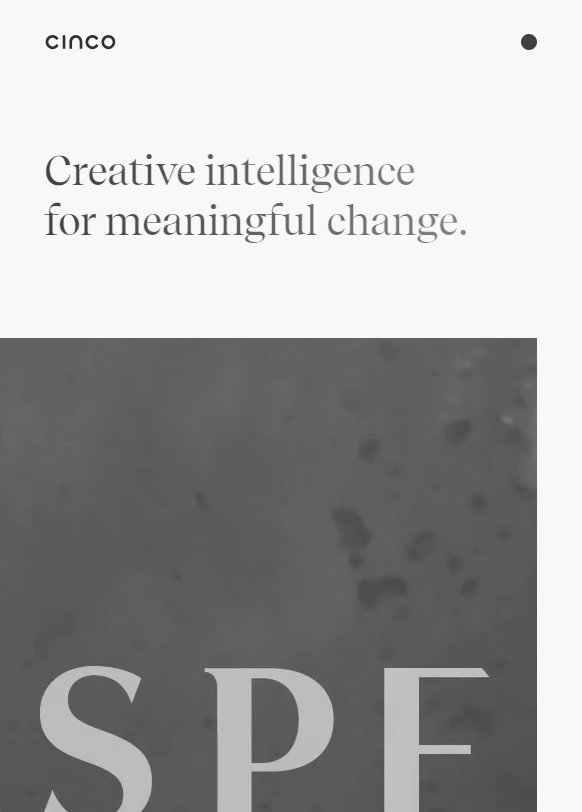
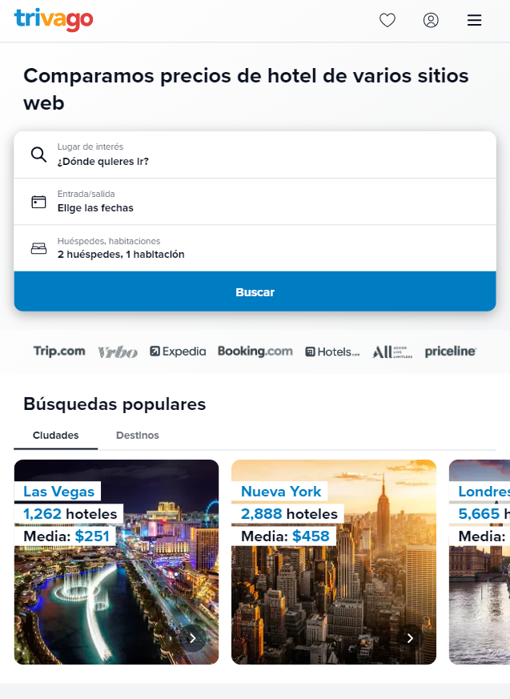

White Space and Clean Design
Cinco
cincodesign.com
Cinco home page feels like a very open page, you really can breathe since there's a lot of space between diferent elements so you never feel overwhelmed by the amount of text or get confused by mixing one section to another.
Repetition
Dropbox
dropbox.com
Dropbox repeats the same pattern in its page, it's very simple and clear, besides theres a lot of information, there is always a dark sections and then a clear one, changing the information subject. A very good way of presenting the information.
Rule of Thirds
Trivago
trivago.com
Trivago page use a layout that leaves always three visible sections, depending the size of the explorer given, but in general three sections are seen, the header, the search tool and popular searches.